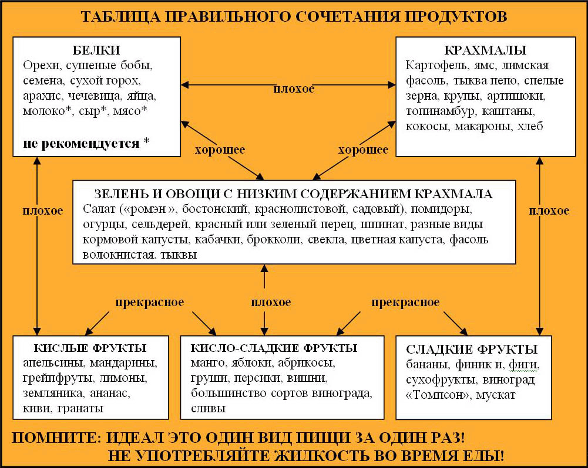

Немного о совместимости основных продуктов питания

1. Не употребляйте пищу насыщенную белками (протеинами) вместе с продуктами, в которых большое содержание крахмала. Этого не стоит делать в связи с тем, что белки (протеины) правильно усваиваются организмом, если желудок выделяет достаточное количество кислоты, которая в свою очередь разрушает амилазу содержащуюся в слюне, а расщепление крахмала происходит как раз под воздействием фермента амилазы. В результате чего протеины (пища богатая белком) и крахмал не могут обрабатываться в одно и то же время. Мясо и картофель не могут обрабатываться одновременно, поэтому необходимо отказаться от их употребления в один прием.
2. Не сочетайте пищу содержащую крахмал с кислотосодержащими продуктами (см. пункт 1) .
3. За один приём пищи, не кушать больше одного вида продуктов насыщенного белками. Для усвоения и переработки двух белков разных видов, необходима затрата организмом больше энергии. Ограничившись одним продуктом содержащим белок, за один приём пищи, Вы сохраните свою энергию, избежите её ненужной траты, с последующей усталостью.
4. Не сочетайте белки с кислыми фруктами. Пепсин – это фермент, необходимый для переваривания белков, разрушается под воздействием большинства кислот, в том числе и фруктовых.
5. Не смешивайте жиры с белками. Жиры мешают выделяться желудочному соку, те самым препятствуют перевариванию белков.
6. Не совмещайте сладкое и крахмалистую пищу в одной трапезе. Когда сахар и крахмал поступают в организм одновременно, то первым будет обрабатываться сахар. Сахар имеет свойство сбраживаться в желудке, тем самым производит фермент разрушающий в слюне амилазу, которая необходима для переработки крахмала. Если Вы кушаете фрукты вместе с крупами и потом страдаете от расстройства пищеварения, то теперь причина расстройства нам известна, как и способы ее устранения. Кушайте фрукты отдельно от круп – таким образом Вы сможете избавиться от процессов брожения в желудке.
7. Не смешивайте сахар с белками. Сахар будет препятствовать выделению желудочного сока, тем самым мешая перевариванию белков. Сахар переваривается только после того, как будут переварены белки, ожидая своей очереди, сахар начинает бродить.
8. Дыню кушайте отдельно. Дыня переваривается очень быстро. Скушав ее перед едой или просто как один продукт, она моментально проходит по всем участкам желудочно-кишечного тракта.
9. Избегайте молока и молочных продуктов, но если отказ от них невозможен, не совмещайте их ни с чем (в виде исключения можно потреблять кисломолочные продукты). Фермент химозин, который необходим для переваривания молока, в достаточном количестве имеется только у младенцев. В организме взрослого человека нет фермента, который способен переваривать молоко. Молоко – слизеобразующий продукт. Выделение большого количества слизи при переваривании молока ведёт к ожирению, зашлакованости организма, часто являясь причиной простудных заболеваний. Раньше, во времена существования СССР проводились агитации полезности этого продукта, сейчас многие медики призывают исключить молоко и молочные продукты из рациона взрослого человека. Молоко идёт на пользу только детям и людям возраст которых от 55 лет. Молоко нельзя ни с чем совмещать, т.к. в молоке много жиров и протеинов.
